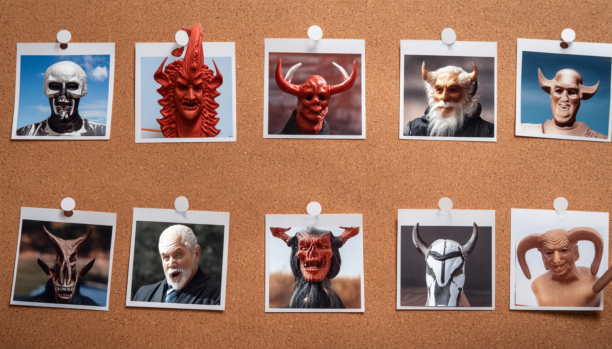

Soy un investigador de lo paranormal el cual se encarga de revelar los secretos de lo paranormal que ocurre en nuestro mundo. Si quieres saber más, puedes encontrarme en mis redes sociales.
paraDemonial - #1 - más allá de lo normal (Julio Santos)
Hoy con un invitado especial, Julio Santos, revelamos misterios de lo que ocurre en los campos de maizales.
Demonios en la Tierra
Estoy muy cerca de desmentir la teoría de los demonios que habitan nuestra tierra.

Árboles que se mueven cuando no los ves
Se cree que existe una raza de árboles que son capaces de moverse cuando no los estás viendo.